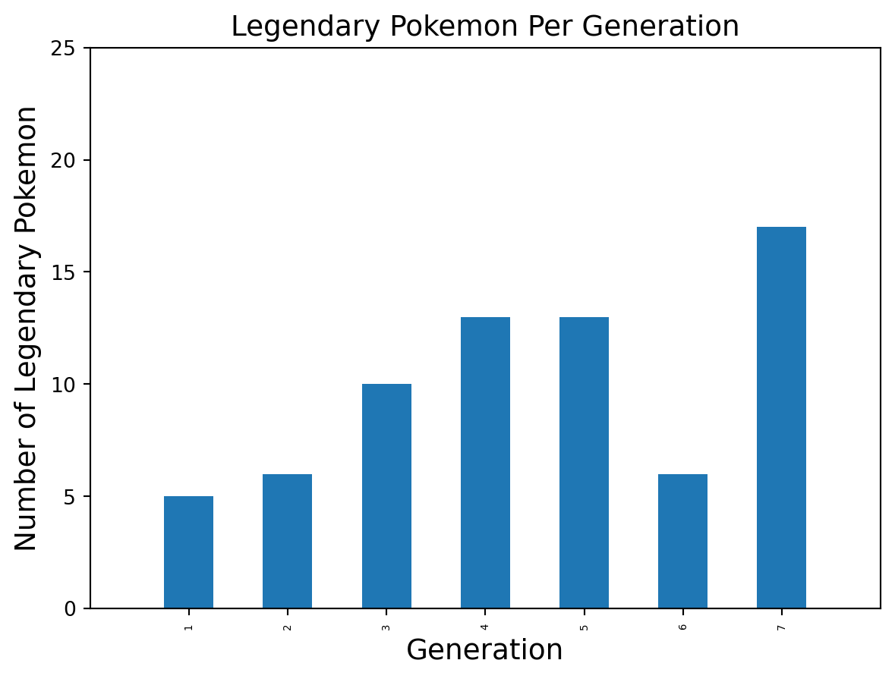
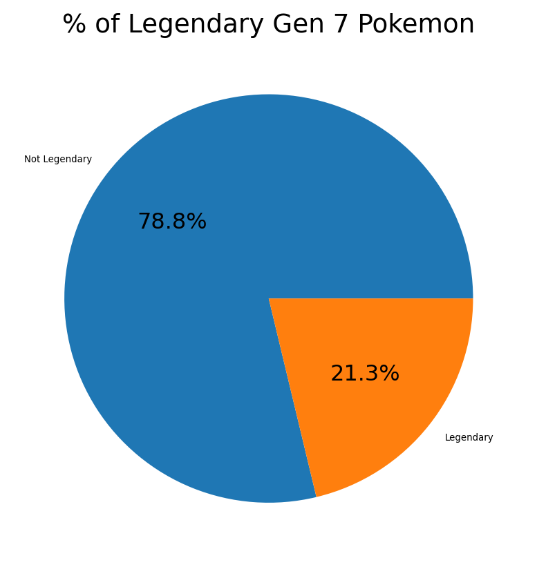

import pandas as pd
import matplotlib.pyplot as plt
plt.rc('font', size=12) # font size
plt.rc('axes', labelsize=14, titlesize=14) # font size of axis and label titles
plt.rc('legend', fontsize=12) # font size of legend
plt.rc('xtick', labelsize=5) # size of ticks on x-axis
plt.rc('ytick', labelsize=10) # size of ticks on y-axisWhat is Probability Theory?
The outcome of random events like rolling a pair of dice are impossible to predict with absolute certainty. Probability theory provides a mathematical framework for quantifying uncertainty and randomness in these situations where outcome is not deterministic.
Under the umbrella of probability theory is a couple of key concepts that I will be going through, such as:
- Random Variables
- Independence
- Conditional Probability
- Bayes Theorem
Areas of Importance
Probability theory has proven to be crucial in various fields including, but not limited to:
Economics
In economics, probability models are used to forecast certain economic indicators like annual GDP growth, inflation, and unemployment rates. Through these forecasts, policymakers are able to make informed decisions about the macroeconomy [2]
Finance
Probability theory is fundamental for assessing risk in financial markets. It has a massive influence on how institutional and individual investors make decisions regarding buying and selling of securities. It also influences the way financial derivatives like options are priced by sellers [2].
Medicine
3 years ago, the whole world was shut down by COVID-19, which resulted in many people falling ill. In instances like this, epidemiologists utilize predictive algorithms to measure the probability of patients being carriers disease carriers based on symptom screening. By identifying novel cases of COVID-19, there is potential that it can be identified early, which can help to reduce long-term complications and even save lives [3]
Random Variables
In the context of probability theory, a random variable is usually designated as \(X\) and can take on different numerical values a as result of random events/experiments. The numerical values associated with the outcome of the event are determined by the underlying probability space[4].[5]. There are 2 types of random variables values:
Discrete Variable
Discrete variables are variables that can only take on certain discrete, countable values. It is restricted to integers and can not be represented as a decimal or fraction.
Examples: - Counts and integers like number of items or scores - Binary variables like pass/fail or yes/no - Rating scales like rating movies on a 1-5 star scale - Event outcomes such as a dice roll or coin flip
Continuous Variables
Continuous variables are able to take on an infinite number of real values within a range. It can take on fractional or decimal values in addition to integer values.
Examples: * Physical measurements like height, weight, temperature * Time, geographic coordinates * Natural phenomena like air pressure
Independence
In probability theory, we say that two events \(A\) and \(B\) are independent if the occurence of one of the events does not effect the probability of the other event. That is, \(P(A|B)=P(A)\) and \(P(B|A)=P(B)\).
For independent events, the probability of both occuring is the product of their respective probabilities. That is, \(P(A \cap B)=P(A)*P(B)\)
Independence can be used to determine whether the probability of one event is dependent on the outcome of another or not. Events that are not independent are dependent, meaning the occurence of one event influences the outcome of another. In statists, we want samples to be independent so we don’t introduce bias.
An example of independence would be a coin flip. If we were to flip 2 coins, the outcome of one of the coins is not going to effect the other since they are independent. Another example would be rolling a pair of dice. The outcome of one dice does not affect another pair.
Conditional Probability
Conditional probability refers to the measure of probability of an event \(A\) occuring, given an another event \(B\) has already occured. That us, \(P(A|B)\).
An example of conditional probability would be the probability that someone has the flu, given they are coughing.
Bayes’ Theorem
Bayes’ Theorem is a formula that is used to calculate conditional probabilities. Essentially, it describes the probability of an event \(A\), given that there is some new information \(B\). That is, \(P(A|B) = \frac{P(B|A) \cdot P(A)}{P(B)}\).
Bayes’ Theorem is really useful in Machine Learning and statistics since it is used to update probability distributions based on observed data.
Application
We start off by importing pandas, which will allow us to extract, aggregate, and analyze our data. We also need to import matplotlib since we need to visualize the data as well.
The aesthetic of the visualizations are altered as well. The size of the legend, axis, ticks, and font are all altered.
I decided to use a dataset from Kaggle of the first 7 generations of Pokemon. Pokemon is a really old video game franchise and essentially any time a new game was made, they would come up new Pokemon. The new Pokemon for the game would comprise of a generation and usually there’s around 100 or more Pokemon per generation. This dataset shows basic information about Pokemon such as their names, weight, height, and number in the Pokedex. Additionally, it includes information that can be interesting to analyze when aggregated, such as attack, defense, hit points (HP), generation, if they are considered legendary, and much more.
Here, we are loading the csv file and converting it into a pandas Series so that it can be examined.
data_source_raw = "../../datasets/pokemon.csv"
data_source_result = pd.read_csv(data_source_raw)
data_source_result| attack | base_egg_steps | base_happiness | base_total | capture_rate | defense | experience_growth | height_m | hp | name | percentage_male | pokedex_number | sp_attack | sp_defense | speed | type1 | type2 | weight_kg | generation | is_legendary | |
|---|---|---|---|---|---|---|---|---|---|---|---|---|---|---|---|---|---|---|---|---|
| 0 | 49 | 5120 | 70 | 318 | 45 | 49 | 1059860 | 0.7 | 45 | Bulbasaur | 88.1 | 1 | 65 | 65 | 45 | grass | poison | 6.9 | 1 | 0 |
| 1 | 62 | 5120 | 70 | 405 | 45 | 63 | 1059860 | 1.0 | 60 | Ivysaur | 88.1 | 2 | 80 | 80 | 60 | grass | poison | 13.0 | 1 | 0 |
| 2 | 100 | 5120 | 70 | 625 | 45 | 123 | 1059860 | 2.0 | 80 | Venusaur | 88.1 | 3 | 122 | 120 | 80 | grass | poison | 100.0 | 1 | 0 |
| 3 | 52 | 5120 | 70 | 309 | 45 | 43 | 1059860 | 0.6 | 39 | Charmander | 88.1 | 4 | 60 | 50 | 65 | fire | NaN | 8.5 | 1 | 0 |
| 4 | 64 | 5120 | 70 | 405 | 45 | 58 | 1059860 | 1.1 | 58 | Charmeleon | 88.1 | 5 | 80 | 65 | 80 | fire | NaN | 19.0 | 1 | 0 |
| ... | ... | ... | ... | ... | ... | ... | ... | ... | ... | ... | ... | ... | ... | ... | ... | ... | ... | ... | ... | ... |
| 796 | 101 | 30720 | 0 | 570 | 25 | 103 | 1250000 | 9.2 | 97 | Celesteela | NaN | 797 | 107 | 101 | 61 | steel | flying | 999.9 | 7 | 1 |
| 797 | 181 | 30720 | 0 | 570 | 255 | 131 | 1250000 | 0.3 | 59 | Kartana | NaN | 798 | 59 | 31 | 109 | grass | steel | 0.1 | 7 | 1 |
| 798 | 101 | 30720 | 0 | 570 | 15 | 53 | 1250000 | 5.5 | 223 | Guzzlord | NaN | 799 | 97 | 53 | 43 | dark | dragon | 888.0 | 7 | 1 |
| 799 | 107 | 30720 | 0 | 600 | 3 | 101 | 1250000 | 2.4 | 97 | Necrozma | NaN | 800 | 127 | 89 | 79 | psychic | NaN | 230.0 | 7 | 1 |
| 800 | 95 | 30720 | 0 | 600 | 3 | 115 | 1250000 | 1.0 | 80 | Magearna | NaN | 801 | 130 | 115 | 65 | steel | fairy | 80.5 | 7 | 1 |
801 rows × 20 columns
Taking a look at the data output, we can see there are 20 columns total. We can then run the info() command on the dataset to get a breakdown of datatypes and more.
As shown below, 16 of the 20 columns are numerical values. Of the 16, most of them are discrete variables since they are integer values such as:
attackbase_egg_stepsbase_happinessbase_totaldefenseexperience_growthhppokedex_numbersp_attacksp_defensespeedgenerationis_legendary
The others are continuous variables because they can take on an infinite number of values within a given range: - height_m - percentage_male - weight_kg
data_source_result.info()<class 'pandas.core.frame.DataFrame'>
RangeIndex: 801 entries, 0 to 800
Data columns (total 20 columns):
# Column Non-Null Count Dtype
--- ------ -------------- -----
0 attack 801 non-null int64
1 base_egg_steps 801 non-null int64
2 base_happiness 801 non-null int64
3 base_total 801 non-null int64
4 capture_rate 801 non-null object
5 defense 801 non-null int64
6 experience_growth 801 non-null int64
7 height_m 781 non-null float64
8 hp 801 non-null int64
9 name 801 non-null object
10 percentage_male 703 non-null float64
11 pokedex_number 801 non-null int64
12 sp_attack 801 non-null int64
13 sp_defense 801 non-null int64
14 speed 801 non-null int64
15 type1 801 non-null object
16 type2 417 non-null object
17 weight_kg 781 non-null float64
18 generation 801 non-null int64
19 is_legendary 801 non-null int64
dtypes: float64(3), int64(13), object(4)
memory usage: 125.3+ KBGetting specific columns that are important.
There’s a lot of information in this file, with a lot of it being unnecessary at the moment.
As a result, we’re going to filter for specific columns and we’re going to rename the columns. In this code, we filter for the generation and is_legendary column so we don’t have to rename every single column. Instead, we’re just renaming the columns that are important to us. We rename generation to Generation and is_legendary to Legendary
generation_legends = data_source_result[["generation", "is_legendary"]]
generation_legends = generation_legends.rename(columns={'is_legendary':"Legendary", 'generation':"Generation"})Afterwards, we determine how many legendary Pokemon are there for each generation.
In this example, generation represents a discrete variable since it exists as an integer within a fixed range of 1-7.
We find that the generation with the most legenedary Pokemon is generation 7. This is done by running the groupby() function on the generation column then subsequently running agg to find the number of legendary pokemon.
Once we sort, it becomes increasingly clear which that Generations 7, 4, 5 are the most ripe with legendary Pokemon
legendary_per_generation = generation_legends.groupby("Generation").agg({"Legendary":"sum", "Generation":"first"})
legendary_per_generation[['Legendary']].sort_values(by="Legendary", ascending=False)| Legendary | |
|---|---|
| Generation | |
| 7 | 17 |
| 4 | 13 |
| 5 | 13 |
| 3 | 10 |
| 2 | 6 |
| 6 | 6 |
| 1 | 5 |
Getting the data, we can now visualize it on a bar graph to compare the number of legendary pokemon across generation.
legendary_per_generation.plot(kind="bar", x="Generation", y="Legendary", title="Legendary Pokemon Per Generation", ylabel="Number of Legendary Pokemon", legend=False)
plt.axis([-1,7 , 0, 25])
plt.show()
So we’ve simply pointed out discrete variables and continuous variables here. We’ve managed to create a discrete variable by counting the number of legendary Pokemon. But what does this have to do with probability? Well we can take a closer look at Pokemon from a specific generation and break it down further. Here we can figure out what are the odds that a Pokemon from Generation 7 is classified as Legendary?
We’ve already imported everything we need, so we need to start by filtering by the generation. Here we have filtered so that only Pokemon from generation 7 will appear.
generation_num = 7
gen7_pokemon = data_source_result[data_source_result['generation']==generation_num]Now that we’ve gotten the specific Pokemon that we want, we also need to get the column we want. Here we are using the is_legendary column because we are evaluating which Pokemon are and aren’t legendary. While we could get the count of each, it is probably more meaningful to get percentage breakdowns of them. As a result, we use value_counts to get the probability of 0 or 1, but we also normalize the results so as to get percentage values rather than just a count.
legendary_pokemon = gen7_pokemon['is_legendary']
legendary_percentages = legendary_pokemon.value_counts(normalize=True)From there, we use 0 and 1 as index values and the percentages that were calculated earlier are used as the values.
legendary_percentages = pd.Series(legendary_percentages.values, index=legendary_pokemon.unique())From there, I created a pie graph since we’re only comparing 2 values. As we can see, there is 78.75% non-legendary Pokemon and 21.25% legendary Pokemon in Generation 7.
legendary_percentages.plot(kind="pie", ylabel="", title="% of Legendary Gen 7 Pokemon", labels=["Not Legendary", "Legendary"], autopct='%.1f%%')
plt.show()
We could also factor in conditional probablity and Bayes’ Theorem. If we were to play a guessing game for every single Pokemon in this dataset, guessing the right Pokemon would be really challenging because there is over 800 Pokemon. We would have only a 0.12% chance of guessing right!
total_num_pokemon = data_source_result['pokedex_number'].count()
1/total_num_pokemon * 1000.12484394506866417But what if we found out that the Pokemon is in Generation 1 and is also a legendary pokemon? That would certainly increase our odds!
Here we can filter for Pokemon that appear in Generation 1, filter for the legendary Pokemon, and then get the count which is 5.
gen1_pokemon = data_source_result[data_source_result['generation']==1]
legendary_gen1 = gen1_pokemon[gen1_pokemon['is_legendary']==1]
legendary_gen1_count = legendary_gen1['name'].count()We then do 1 divided by the count to get our new odds. We have improved our guessing odds from 0.1% to 20%!
1/legendary_gen1_count * 10020.0This showcasing Bayes’ Theorem, which suggests bringing in new evidence will effect the outcome of the event. In our case, we found out that the Pokemon we were looking for is in Generation 1 and Legendary. This narrowed down the choices Pokemon we can guess from